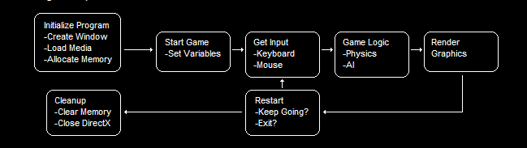
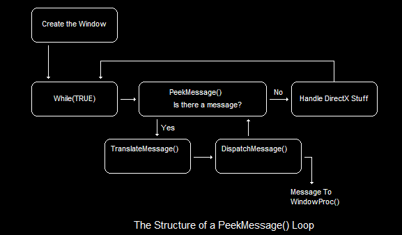
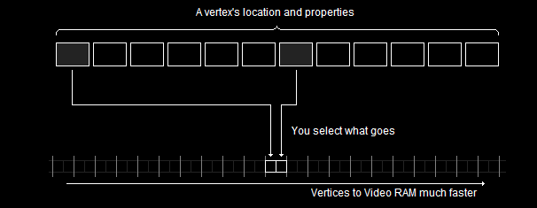

# DirectX9 Basics
http://www.directxtutorial.com/LessonList.aspx?listid=9## The Game Loop
Boot 1. Start game (create window, allocate memory
2. Load in and set variables (map, player cooridinates, etc.)
Game loop3. Get player input (run, jump, look left, etc.)
4. Computer game logic (how high they jumped, did they run into a wall, etc.)
5. Render the graphics (wall in front, tree on left, enemy on right, etc.)
DONE! Frame gets drawn to screen and loop repeats (get player input > compute logic > render graphics)
## About Windows GUI Applications
Windows GUI applications are event driven.
Events are user input - mouse clicks, keyboard presses, clicking on X to close or - to minimise, etc.
Events are put into a message queue.
WndProc - the Window Procedure - (which is a function you write) handles these events.
#include <Windows.h>
LRESULT CALLBACK WindowProcedure(HWND hWnd, UINT msg, WPARAM wParam, LPARAM lParam)
{
switch (msg)
{
case WM_CLOSE:
DestroyWindow(hWnd); // Destroys window and LL child windows and removes window from system
break;
case WM_DESTROY:
PostQuitMessage(0); // Sends WM_QUIT to message loop to quit
break;
default:
return DefWindowProcA(hWnd, msg, wParam, lParam);
}
return 0;
}
int WINAPI WinMain(HINSTANCE hInstance, HINSTANCE hPrevInstance, PSTR pCmdLine, int nCmdShow)
{
WNDCLASSEXA wc = { 0 };
HWND hwnd = NULL;
MSG msg = { 0 };
// Step 1. Register a Window class
wc.cbSize = sizeof(WNDCLASSEXA);
wc.style = CS_HREDRAW | CS_VREDRAW;
wc.lpfnWndProc = WindowProcedure;
wc.hInstance = hInstance;
wc.hCursor = LoadCursorA(NULL, IDC_ARROW);
wc.hbrBackground = (HBRUSH)COLOR_WINDOW;
wc.lpszClassName = "FirstWindow";
if (!RegisterClassExA(&wc))
{
MessageBoxA(NULL, "Failed to register window :/", "Error", MB_ICONEXCLAMATION | MB_OK);
return -1;
}
// Step 2. Create a Window
hwnd = CreateWindowExA(WS_EX_CLIENTEDGE, "FirstWindow", "My window title", WS_OVERLAPPEDWINDOW, CW_USEDEFAULT, CW_USEDEFAULT, 240, 120, NULL, NULL, hInstance, NULL);
if (hwnd == NULL)
{
MessageBoxA(NULL, "Failed to create window :/", "Error", MB_ICONEXCLAMATION | MB_OK);
return -1;
}
// Show Window and update it to ensure it's drawn correctly
ShowWindow(hwnd, nCmdShow);
UpdateWindow(hwnd);
// Step 3. Message Loop
while (GetMessageA(&msg, NULL, 0, 0, PM_REMOVE))
{
TranslateMessage(&msg);
DispatchMessageA(&msg);
}
return msg.wParam;
}
## PeekMessage()
GetMessage() waits for a message.
When it receives one, it processes it.
This is fine for GUI applications because they don't do anything autonomous in the background,
they wait for a user to do something and then respond.
GetMessage() doesn't work for games.
Games do stuff in the background and need to render 30-60 images per second and render them on the screen.
Instead, games use PeekMessage().
PeekMessage() doesn't wait for anything. It looks in the queue and checks if there's anything there.
With games, your message loop will look this,
using PeekMessage in the
while loop instead of GetMessage
// Enter the infinite message loop
while(TRUE)
{
// Check to see if any messages are waiting in the queue
while(PeekMessage(&msg, NULL, 0, 0, PM_REMOVE))
{
// Translate the message and dispatch it to WindowProc()
TranslateMessage(&msg);
DispatchMessage(&msg);
}
// If the message is WM_QUIT, exit the while loop
if(msg.message == WM_QUIT)
break;
// Run game code here
// ...
// ...
}
## Create a Window
Here's a basic window created with the Windows GUI.
Replace
PeekMessage with
GetMessage to have window stay open,
but for DirectX and rendering games we need to use
PeekMessage.
## DirectX and COM
DirectX is actually a series of COM objects
One of these is Direct3D.
Direct3D is a class using that runs 2d and 3d graphics using hardware/software/whatever.
This is why you see
d3d->CreateDevice and
d3d->Release (because they're COM objects / C++ classes)
## Create a Blue Window
Direct3d InterfaceLPDIRECT3D9 d3d;This is a pointer to Direct3d.
Direct3d DeviceLPDIRECT3DDEVICE9 d3d_device;The Direct3d device stores info about graphics drivers, video card, graphics hardware, etc.
This is a pointer to the Direct3d device (class) that stores all this info
Compile options:
• Linker > System > Subsystem >
Windows•
/*
Creates a window and directx renders it blue.
Written in c (not c++) so using IDirect3d9_CreateDevice (not d3d->CreateDevice)
*/
#include <Windows.h>
#include <windowsx.h> // Need this for PeekMessage to handle windows controls (X button, etc.)
#include <d3d9.h>
#pragma comment(lib, "d3d9.lib")
LPDIRECT3D9 d3d = NULL; // Pointer to our Direct3d interface
LPDIRECT3DDEVICE9 d3d_device = NULL; // Pointer to the device class
void InitDirect3d(HWND hWnd)
{
// Create Direct3d interface and struct to hold device params
d3d = Direct3DCreate9(D3D_SDK_VERSION);
D3DPRESENT_PARAMETERS d3dpp = { 0 };
d3dpp.Windowed = TRUE;
d3dpp.SwapEffect = D3DSWAPEFFECT_DISCARD; // Discard old frames
d3dpp.hDeviceWindow = hWnd; // Set window to be used by Direct3d (the window we've created in WinMain)
// Create Direct3d device
IDirect3D9_CreateDevice(d3d, D3DADAPTER_DEFAULT, D3DDEVTYPE_HAL, hWnd, D3DCREATE_SOFTWARE_VERTEXPROCESSING, &d3dpp, &d3d_device);
return;
}
void CleanupDirect3d()
{
IDirect3DDevice9_Release(d3d_device);
IDirect3D9_Release(d3d);
}
void RenderFrame()
{
// Clear the window to a deep blue
IDirect3DDevice9_Clear(d3d_device, 0, NULL, D3DCLEAR_TARGET, D3DCOLOR_XRGB(0, 40, 100), 1.0f, 0);
// Start the 3d scene
IDirect3DDevice9_BeginScene(d3d_device);
// Do 3d rendering on the back buffer
IDirect3DDevice9_EndScene(d3d_device);
// Display rendered frame on screen
IDirect3DDevice9_Present(d3d_device, NULL, NULL, NULL, NULL);
return;
}
LRESULT CALLBACK WindowProcedure(HWND hWnd, UINT msg, WPARAM wParam, LPARAM lParam)
{
switch (msg)
{
case WM_CLOSE:
DestroyWindow(hWnd); // Destroys window and LL child windows and removes window from system
break;
case WM_DESTROY:
PostQuitMessage(0); // Sends WM_QUIT to message loop to quit
break;
default:
return DefWindowProcA(hWnd, msg, wParam, lParam);
}
return 0;
}
int WINAPI WinMain(HINSTANCE hInstance, HINSTANCE hPrevInstance, PSTR pCmdLine, int nCmdShow)
{
WNDCLASSEXA wc = { 0 };
HWND hWnd = NULL;
MSG msg = { 0 };
// Register a Window class
wc.cbSize = sizeof(WNDCLASSEXA);
wc.style = CS_HREDRAW | CS_VREDRAW;
wc.lpfnWndProc = WindowProcedure;
wc.hInstance = hInstance;
wc.hCursor = LoadCursorA(NULL, IDC_ARROW);
wc.hbrBackground = (HBRUSH)COLOR_WINDOW;
wc.lpszClassName = "FirstWindow";
if (!RegisterClassExA(&wc))
{
MessageBoxA(NULL, "Failed to register window :/", "Error", MB_ICONEXCLAMATION | MB_OK);
return -1;
}
// Create a Window
hWnd = CreateWindowExA(WS_EX_CLIENTEDGE, "FirstWindow", "My window title", WS_OVERLAPPEDWINDOW, CW_USEDEFAULT, CW_USEDEFAULT, 240, 120, NULL, NULL, hInstance, NULL);
if (hWnd == NULL)
{
MessageBoxA(NULL, "Failed to create window :/", "Error", MB_ICONEXCLAMATION | MB_OK);
return -1;
}
// Show Window and update it to ensure it's drawn correctly
ShowWindow(hWnd, nCmdShow);
UpdateWindow(hWnd);
// Initialise Direct3d
InitDirect3d(hWnd);
// Window message Loop
while (TRUE)
{
while (PeekMessageA(&msg, NULL, 0, 0, PM_REMOVE))
{
TranslateMessage(&msg);
DispatchMessageA(&msg);
}
if (msg.message == WM_QUIT)
break;
// Render DirectX frame
RenderFrame();
}
// Clean up DirectX
CleanupDirect3d();
return msg.wParam;
}
## Draw a Triangle
Direct3d uses FVF - Flexible Vertex Format.
Using FVF - you can select which blocks of the vertext to send to VRAM (instead of the whole vertex).
e.g.
A vertex is a struct.
The struct might have 12 elements.
You only need to send 2 of these elements to VRAM.
Using FVF, you can send just those 2 elements and transfer data to VRAM much faster than if you sent the whole struct.
### Custom Vertex Formats
Create a Vertex DefnitionYou can define which vertex elements to send using custom vertex formats.
These are called Vertex Definitions.
e.g. Send just the location and the diffuse colour
#define CUSTOMFVF (D3DFVF_XYZRHW | D3DFVF_DIFFUSE)Create VerticiesNow you can create verticies to go with your Vertex Defintion
struct CUSTOMVERTEX
{
FLOAT x, y, z, rhw; // from the D3DFVF_XYZRHW flag
DWORD color; // from the D3DFVF_DIFFUSE flag
}
Lastly, you can build your custom vertex.
CUSTOMVERTEX OurVertex = {320.0f, 50.0f, 1.0f, 1.0f, D3DCOLOR_XRGB(0, 0, 255)};
CUSTOMVERTEX OurVertices[] =
{
{320.0f, 50.0f, 1.0f, 1.0f, D3DCOLOR_XRGB(0, 0, 255),},
{520.0f, 400.0f, 1.0f, 1.0f, D3DCOLOR_XRGB(0, 255, 0),},
{120.0f, 400.0f, 1.0f, 1.0f, D3DCOLOR_XRGB(255, 0, 0),},
};
### Vertex Buffer
To ready an item for Direct3d to use, you use a vertex buffer.
A vertex buffer is a block of memory that stores info about your verticies.
First you create a buffer:
LPDIRECT3DVERTEXBUFFER9 v_buffer;CreateVertexBuffer(3*sizeof(CUSTOMVERTEX), 0, CUSTOMFVF, D3DPOOL_MANAGED, &v_buffer, NULL);Before you can use it you need to lock the buffer.
This tells video hardware not to touch it whilst you're working on it
Lock(0, 0, (void**)&pVoid, 0);Next you copy your vertices into the buffer
memcpy(pVoid, OurVertices, sizeof(OurVertices));And lastly you Unlock the buffer
to tell Direct3d that we're finished with that block of memory
Unlock();#define CUSTOMFVF (D3DFVF_XYZRHW | D3DFVF_DIFFUSE)
struct CUSTOMVERTEX
{
FLOAT x, y, z, rhw; // from the D3DFVF_XYZRHW flag
DWORD color; // from the D3DFVF_DIFFUSE flag
}
void InitGraphics()
{
// create three vertices using the CUSTOMVERTEX struct built earlier
CUSTOMVERTEX vertices[] =
{
{ 320.0f, 50.0f, 0.5f, 1.0f, D3DCOLOR_XRGB(0, 0, 255), },
{ 520.0f, 400.0f, 0.5f, 1.0f, D3DCOLOR_XRGB(0, 255, 0), },
{ 120.0f, 400.0f, 0.5f, 1.0f, D3DCOLOR_XRGB(255, 0, 0), },
};
// create the vertex and store the pointer into v_buffer, which is created globally
d3ddev->CreateVertexBuffer(3*sizeof(CUSTOMVERTEX),
0,
CUSTOMFVF,
D3DPOOL_MANAGED,
&v_buffer,
NULL);
VOID* pVoid; // the void pointer
v_buffer->Lock(0, 0, (void**)&pVoid, 0); // lock the vertex buffer
memcpy(pVoid, vertices, sizeof(vertices)); // copy the vertices to the locked buffer
v_buffer->Unlock(); // unlock the vertex buffer
return;
}